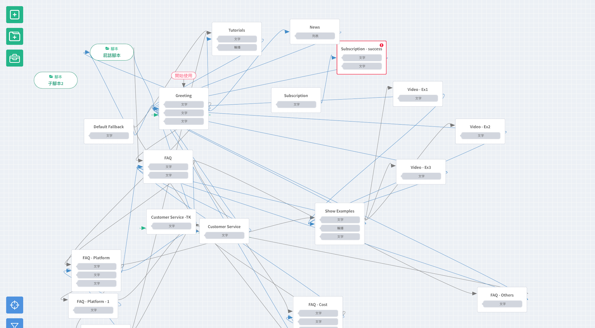
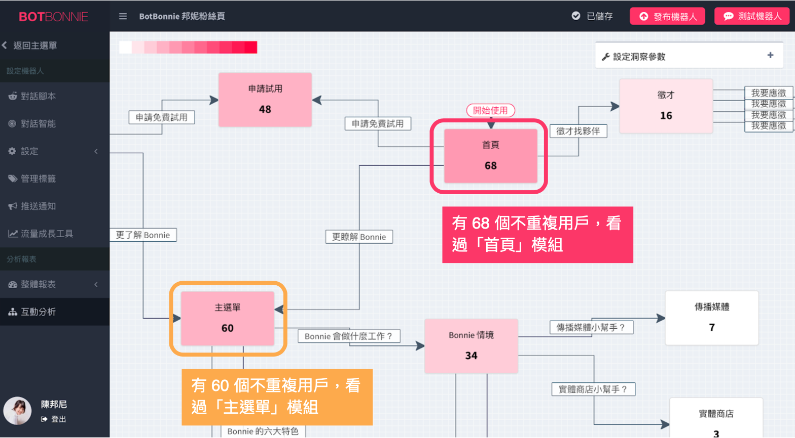
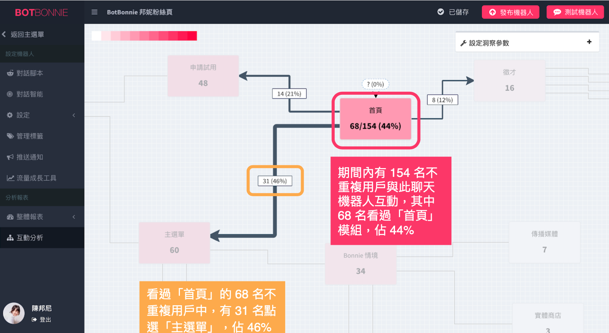
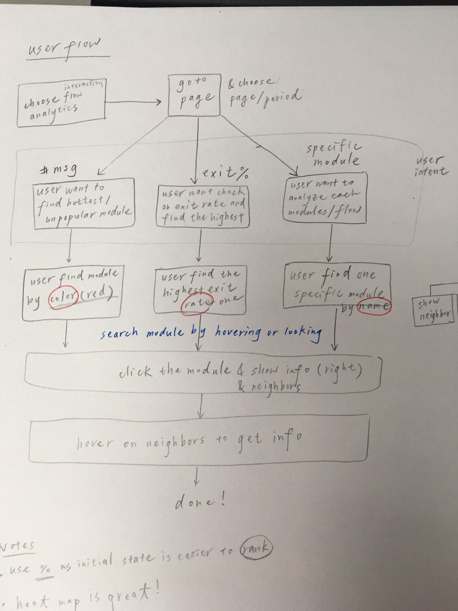
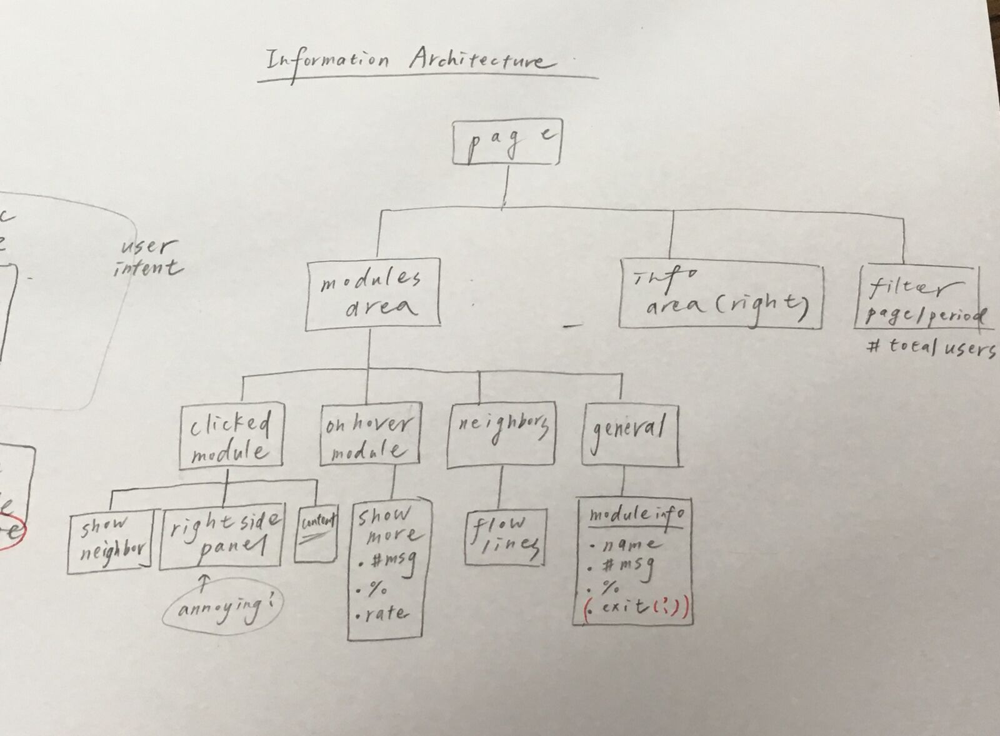

UI/UX DESIGN
Re-design Bot Flow Analytics
Background
BotBonnie Platform is built for users to create chatbots. With this platform, users can establish their chatbot agent for both Facebook and LINE, the top 2 most popular messaging platforms in Asia. For people using BotBonnie Platform to build their chatbots, the most important thing they care about is the popularity and flow of each conversation module. So there comes a flow analytics tool for users to get tracking of their chatbots.
Problem
However, the previous version of flow analytics tool is not appropriate for current platform, and it has been closed for a while. For the reason that lots of new platform features are developed, and the platform library has been changed to a new one. As a result, the style and component of previous flow analytics tool is not compatible at present, and they need a new flow analytics design for the current platform architecture and features.
THE CHALLENGE
To make combination with previous and current libraries & style
My Role
I worked as UX/UI Designer in this project. Some of my responsibilities included:
- Planning and defining scpoe and schedule
- Conduct user interviews & observations
- Facilitate ideation & design decisions
- Sketching, wireframing, and making high-fidelity mockups
- Front-end dev& collaborate with other devs
Success Matrics
- Can find the most/less popular modules
- Easy to view click rate of each route and button
- The module positions in flow analytics should be as same as in the module-editing version
Production
With new flow analytics system, users can get all flow report and click rate of each route, button, script, and modules. Users can also use filters to look for specific range of flow data. Finally, users can export all statistics if they need.
THE PROCESS
Understand the Context
Stakeholder Interviews

Identifying Users Requirement
Faciliate Design Ideation
Wireframing & Mockups
Usability Test & Interview
TARGET AUDIENCE
Our Users
The users of this new feature are most marketing management team of e-commerce or advertisement agency. They act as an reporter or analyst with the goal of driving improvement in profit growth and finding new business strategies.
The interesting thing is that, the two companies we interviewed have very different opinions and needs. Since they have different marketing strategies, it's a challege to meet needs of both sides.
Interview with Oath, Inc.
Interview with Shopee, Inc.
IDEATION
Feature Selection
With interview record and previous analysis data, I ideated solutions based on our target users' problems, behaviors, goals, and priority.
Get marketing statistics
Read interacted customers data
Export with clear format
REDESIGN
Analysis of previous ver.
There’re some problems in the previous version of flow analytics.
- The graph style and component is different from the new library of platform.
Current library Style of Platform
Previous Flow Analytics
- The button content is unclear while hovering on buttons and lines.
- Users cannot preview the module contents.
- The types of statistics of previous version is not enough for current users.
- The previous version cannot handle with complicated connections and it might be hard to read the statistics.
Previous Flow Analytics
INFORMATION ARCHITECTURE
User Flow Diagrams
Here’re the paper user flow and information architecture.
User Flow
Information Architecture
USABILITY TESTING
User Interviews
After the prototype usability testing and interviewing, I concluded their feedbacks and different needs as the followings:
- Some companies need more customized statistics and functions
- Not every users appreciate to GUI interface
- The categoaries and filter to dispaly statistics should be more nearly complete
- The format of export file should be customized
TAKEAWAYS